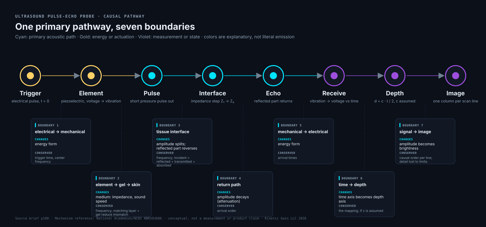
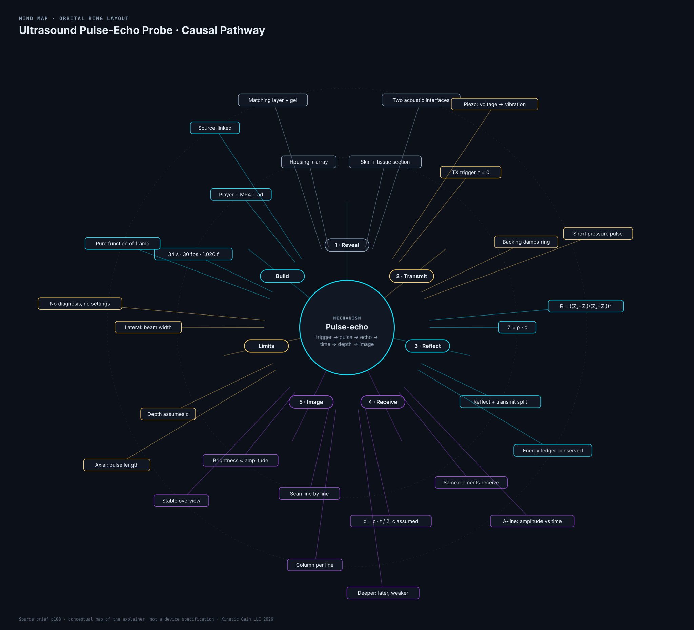
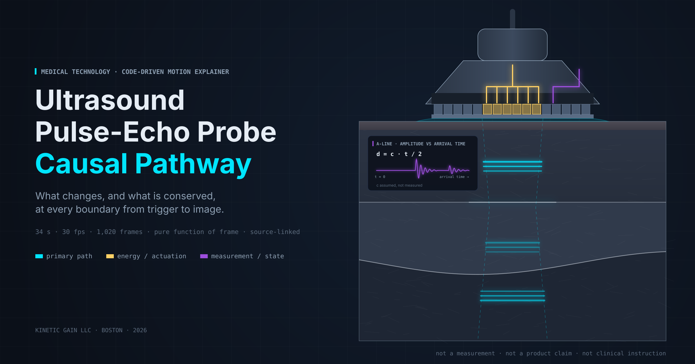

Medical technology · p108 · editorial variant
Cyan is the primary path: the acoustic pulse out and the echo back. Gold is energy or actuation: the electrical drive. Violet is measurement or state: received signal, timing, image data. Color is explanatory, not literal emission. Physical parts live in the section view; mathematical diagrams live in the insets.
A focused editorial variant of the existing mechanism brief. The same frame index always draws the same picture: no clocks, no randomness. Keyboard: space plays, arrow keys step, 1 to 5 jump to a stage. Motion starts paused when your system prefers reduced motion.
34 s30 fps1,020 framespure function of framesource-linked
Both renders are frame-exact exports of the same code that draws the plate above. Score and pulse cues are synthesized from the frame timing.
Commercial · download MP4
Explainer render · download MP4
One primary input-to-output pathway, with the change and the conserved quantity named at each boundary.

Orbital ring layout: the mechanism at the hub, one sector per stage, limits and conservation on the outer ring.

